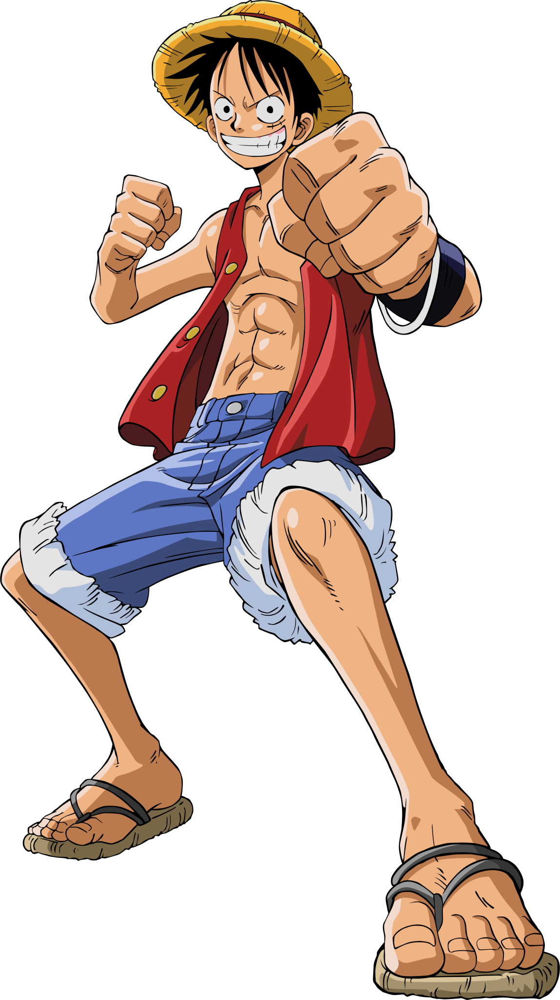
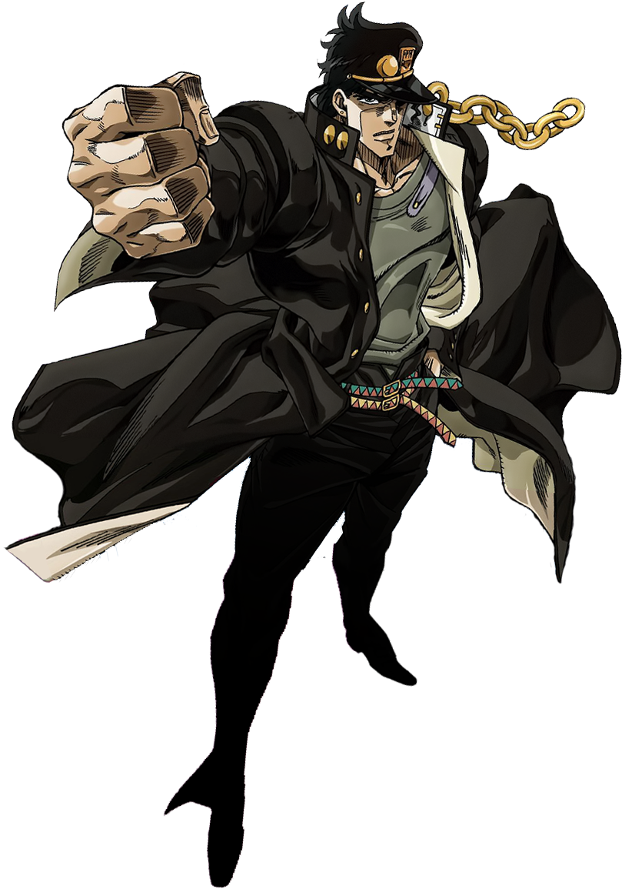

Introducción
El anime japonés ha dado vida a personajes que se han convertido en referentes culturales en todo el mundo. Cada uno con su propio estilo visual y valores que influyen tanto en jóvenes como en adultos.
El anime, desde su creación a influido no solo en la cultura de japón si no en la de otros paises, y actualmente tiene una gran fuerza e influencia en distintos ambitos en todo el mundo. Aparte de ser una forma de entretenimiento, se convirtio,para quienes lo ven,en una manera de salir de la realidad y entrar en mundos nuevos, con historias fantasticas y visuales espectaculares. Gracias a todos estos elementos, muchos encuentran en el anime una manera de ser ellos mismos ademas de identificarse con los personajes por sus vivencias, actitudes o por su forma de ser, cada uno de estos personajes le ha enseñado distintos valores a toda la gente del mundo, desde no rendirse jamas sin importar que, hasta ser los mejores en todo lo que hagan y se propongan.
Algunos personajes iconicos
- Goku: El protagonista de la saga Dragon Ball, es un símbolo del anime shonen, conocido en todo el mundo por sus aventuras y sus peleas a lo largo del anime. tambien es conocido por siempre superarse e ir mas alla de los limites, con cada suceso que ocurre en la serie, este personaje logra sobrepasar cada obstaculo, y asi mismo ha enseñado a muchos a superar sus probelmas.
- Naruto: El ninja de Konoha que sueña con convertirse en Hokage, que sin importar cuanto lo odiaran en su aldea y sin importar que pasara jamas iba a olvidar su sueño y haria lo posible por demostar que lo lograria, ademas de hacer hasta lo imposible por sus amigos.
- Luffy: Capitán de los Piratas del Sombrero de Paja, en busca el One Piece, que a lo largo de su trayecto vivira miles de experiencias que le haran ver que la amistad es uno de los valores mas importantes y que sin esta su tripulacion esta incompleta, además de que hara lo que sea para interponerse en cualquier plan maligno, sin importar que le suceda a el.
- Pikachu: El Pokémon más famoso, compañero de Ash en su aventura, siendo mas que un animal o una mascota, es un amigo para el protagonista que gracias a su personalidad alentó a que muchos hallaran en sus mascotas un amigo mas con el que pueden contar.
- Jotaro: Es el protagonista de la tercera parte del anime JoJo’s Bizarre Adventure, es conocido por su seriedad a la hora de pelear y en cualquier ambito ademas de su valentia, alguien que no teme enfrentarse al peligro y que demostrara su fuerza contra quien sea.
Galería de personajes




